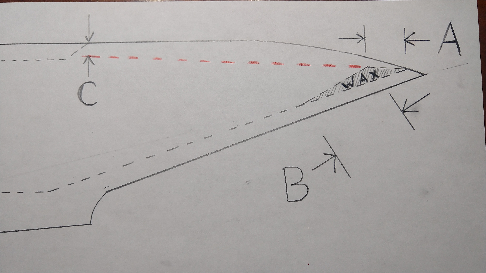
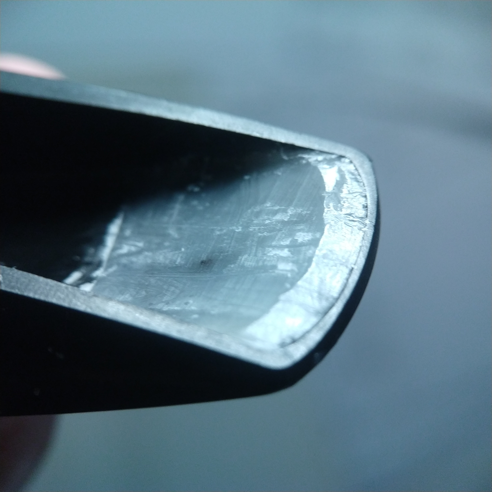

I'm learning to design, modify, and repair mouthpieces. Especially of interest to me is how to construct a baffle to give a particular timbre.
Today I constructed several rollover baffles atop an otherwise-dark-sounding baritone mouthpiece. With each new wax rollover baffle, the dimensions of the baffle were written down and a recording of the D minor scale was made.
Here is a sketch showing the dimensions referenced. Dimension A is the baffle length. Dimension C is the depth below the table where the baffle angle (the red-orange line) crosses.
Here is a photo of one of the wax baffles. (C=0mm, A=2.3mm) 
For simplicity these rollover baffles actually have sharp edges. The baffle angle was established in a repeatable manner by scraping the wax with the side of a cane reed with one end of the reed resting atop the tip rail and the other end of the reed resting either at the base of the window (for C=0mm) or 5mm below the base of the window (for C=5mm).
Establishing the baffle length (A) was more akin to "shave and check". The same flat object was used to establish the back side of the baffle, and after a few scrapes the baffle length (A) was measured. Once the length was deemed appropriate for the next reading, a recording was made.
See if you can find a sound from the left column that has has a similar timbre to one from the right column. That's the real point of this exercise ;)
Note the last one in the left column (C=0mm, A=0mm) represents the mouthpiece with no wax baffle at all.